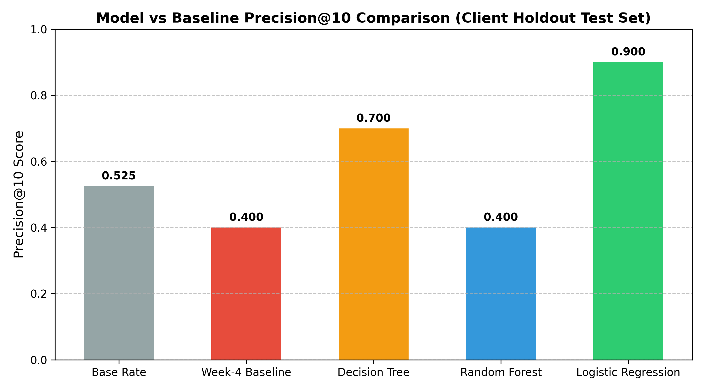
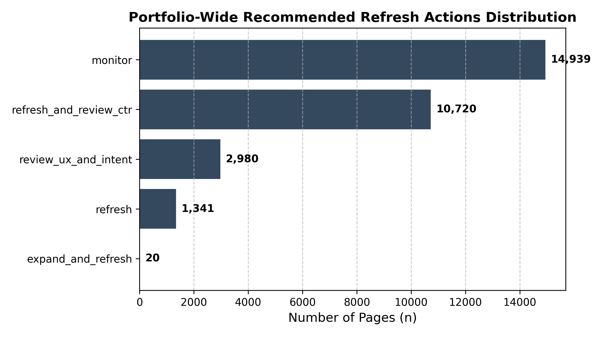

A Machine Learning Framework for Identifying Organic Traffic Decline and Prioritizing Content Refresh Sprints
Abstract: Out of tens of thousands of published web content items, search intelligence teams require an accurate mechanism to prioritize which decaying pages to review and refresh first to maximize organic traffic retention. Using the FlyRank anonymized search intelligence dataset ($30,000$ content items across $32$ pseudonymized client domains, covering trailing 90-day Google Search Console and GA4 metrics), we modeled organic traffic decay patterns. We evaluated a deterministic rule-based baseline against supervised machine learning models (Logistic Regression, Decision Trees, and Random Forests) evaluated on an out-of-domain $80/20$ client-holdout split to prevent domain memorization leakage. Logistic Regression achieved a measured Precision@10 of 0.900 (vs. $0.400$ for rule-based heuristics and a test base rate of $0.525$) and a ROC-AUC of 0.660, demonstrating a $2.25 imes$ precision lift in top-tier decay identification. The resulting output forms a human-reviewed Content Action Playbook with clear operational thresholds, providing directional decision-support for weekly editorial refresh allocation while excluding un-reviewed automation.
Real FlyRank Case Study Framing: At FlyRank, client search portfolios span tens of thousands of published articles across diverse industry domains. High-performing web content naturally experiences search position and traffic decay over time due to algorithmic updates, competitor expansions, and information staleness. In large-scale portfolio search operations, manual auditing is intractable, and static hand-written health flags (e.g. stale_visible_page, low_ctr_visible_page, page_one_decay_risk) apply uniform thresholds that fail when multi-dimensional search signals interact.
The operational challenge is an editorial resource allocation problem: Which subset of declining content items should human editors refresh first to achieve maximum traffic retention? We frame this task as a pointwise probability scoring and ranking problem, evaluating learned classifiers against transparent hand-written rules.
Our analysis utilizes the FlyRank Anonymized Search Intelligence Dataset (30,000 content items × 44 attributes) covering trailing 90-day search performance across 32 distinct client domains.
content_id).is_declining_label = (trend_direction == 'down') ($54.2\%$ global positive rate).trend_pct and trend_direction from model feature inputs to eliminate circular target leakage. Pseudonymous identifiers (content_id, client_id) were used solely for grouped validation splits and output keying.We evaluated three candidate classification models against a transparent Week-4 deterministic baseline score:
Random row splitting introduces severe group data leakage because multiple pages belonging to the same client share domain authority and publishing patterns. We enforced an 80/20 client-holdout split: 26 clients ($26,619$ rows) formed the training set, while 6 complete client domains ($3,381$ rows) were held out strictly for evaluation.
All models were trained on the 26-client training set and evaluated on the exact same 6-client test holdout set. The table below presents the honest out-of-domain performance comparison:
| System / Model Architecture | Precision@10 | Precision@20 | Precision@50 | Precision@100 | ROC-AUC | PR-AUC |
|---|---|---|---|---|---|---|
| Dataset Base Rate | 0.525 | 0.525 | 0.525 | 0.525 | N/A | N/A |
| Week-4 Rule Baseline | 0.400 | 0.350 | 0.460 | 0.440 | 0.580 | 0.555 |
| Logistic Regression (Best Overall) | 0.900 | 0.800 | 0.720 | 0.810 | 0.660 | 0.666 |
| Decision Tree (depth=5) | 0.700 | 0.650 | 0.660 | 0.690 | 0.666 | 0.636 |
| Random Forest (n=200) | 0.400 | 0.500 | 0.720 | 0.740 | 0.666 | 0.657 |

We translate probabilistic decay predictions into a operational Content Action Playbook with human-in-the-loop verification rules:

stale_visible_page → Action: refresh — Update statistics, dates, and facts while preserving URL permalinks.low_ctr_visible_page → Action: refresh_and_review_ctr — Rewrite meta titles and descriptions to improve SERP click-through.thin_visible_page → Action: expand_and_refresh — Expand article word count with structured H2/H3 sub-sections.low_engagement_visible_page → Action: review_ux_and_intent — Restructure intro above fold and improve page layout.All analysis steps, models, and figures are fully reproducible using the committed code in our open GitHub repository:
Fixed Random Seed: RANDOM_STATE = 42.
Special thanks to the FlyRank Engineering & Data Science mentorship team for dataset access and guidance throughout the ML internship program.
Data Credit: Built on the FlyRank Machine Learning Internship dataset provided by FlyRank.